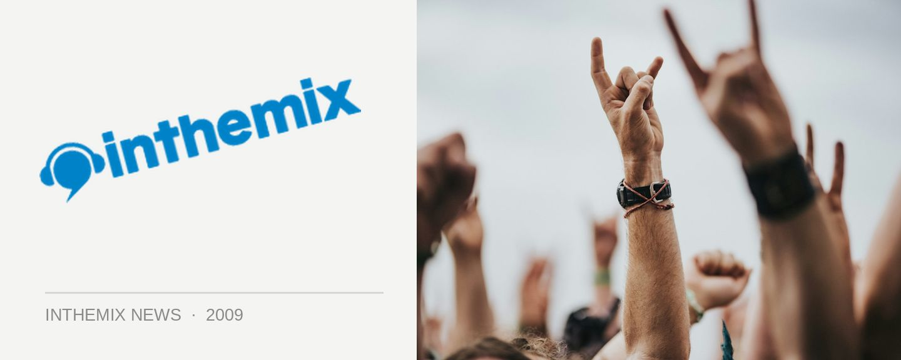

More acts revealed for Freedom Festival
Following last month’s announcement of the smokin’ posse of trance artists who will be playing at Freedom Festival, the organisers have revealed a fresh round of acts that will be present when the party takes over Parramatta Stadium on Saturday November 7th. For this round of announcements there’s a special emphasis on the producers who have offered something special to house and electro in recent years.
Germany’s Eddie Thoneick heads up the list, a DJ/producer who’s earnt himself support from the likes of Axwell, Roger Sanchez, Mark Knight and Erick Morillo since establishing his Tonik record label. Joining him will be electro heavyweight Klaas along with remix extraordinaire Thomas Gold, Dabruck & Klein and two special live performances from house vocalists Steve Edwards and Terri B.
There’s more to come, with the organisers of Freedom Festival confirming we’ll have another lineup announcement shortly featuring the headliners.
Freedom Festival lineup:
Rank 1
Thomas Gold
Scot Project
Dabruck & Klein
Agnelli & Nelson
Wippenberg
Klaas
Eddie Thoneick
Steve Edwards (live vocal)
Terri B (live vocal)
Freedom Festival comes to Parramatta Stadium on Saturday November 7th. Check out ITM’s Festival Page for more info, and the trailer below…